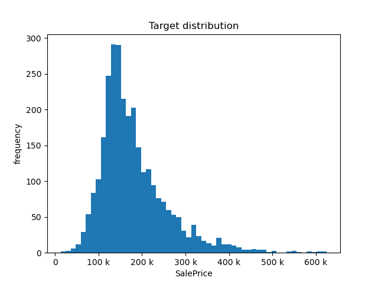
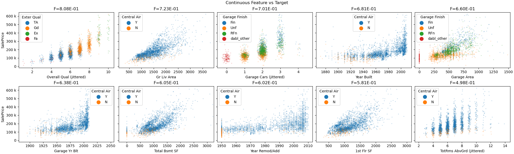

Note
Click here to download the full example code
Ames Housing Dataset Visualization¶
- 
- 

Target looks like regression
/home/circleci/project/dabl/plot/utils.py:636: UserWarning: Dropped 2 outliers in column SalePrice.
warn("Dropped {} outliers in column {}.".format(
/home/circleci/project/dabl/plot/supervised.py:598: UserWarning: Discarding 2 outliers in target column.
warn(f"Discarding {n_outliers} outliers in target column.",
Showing only top 10 of 26 continuous features
/home/circleci/project/dabl/plot/utils.py:636: UserWarning: Dropped 3 outliers in column Gr Liv Area.
warn("Dropped {} outliers in column {}.".format(
/home/circleci/project/dabl/plot/utils.py:636: UserWarning: Dropped 1 outliers in column Garage Cars.
warn("Dropped {} outliers in column {}.".format(
/home/circleci/project/dabl/plot/utils.py:636: UserWarning: Dropped 1 outliers in column Garage Yr Blt.
warn("Dropped {} outliers in column {}.".format(
/home/circleci/project/dabl/plot/utils.py:636: UserWarning: Dropped 2 outliers in column Total Bsmt SF.
warn("Dropped {} outliers in column {}.".format(
/home/circleci/project/dabl/plot/utils.py:636: UserWarning: Dropped 4 outliers in column 1st Flr SF.
warn("Dropped {} outliers in column {}.".format(
/home/circleci/project/dabl/plot/utils.py:636: UserWarning: Dropped 1 outliers in column TotRms AbvGrd.
warn("Dropped {} outliers in column {}.".format(
Showing only top 10 of 41 categorical features
# sphinx_gallery_thumbnail_number = 3
from dabl import plot
from dabl.datasets import load_ames
import matplotlib.pyplot as plt
# load the ames housing dataset
# returns a plain dataframe
data = load_ames()
plot(data, target_col='SalePrice')
plt.show()
Total running time of the script: ( 0 minutes 3.304 seconds)